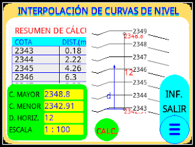
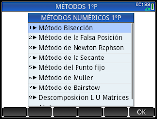
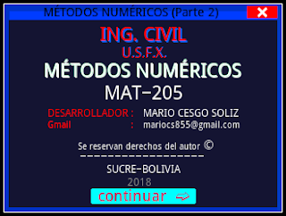
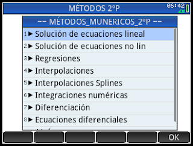
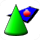
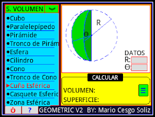
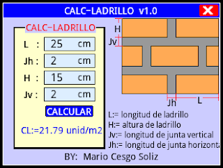
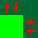
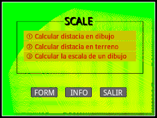
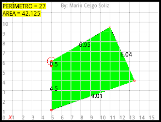

Colección de programas desarrollados para la calculadora gráfica HP-PRIME
Autor: Mario Cesgo Soliz
Programa para interpolación de curvas de nivel topográficas.

DESCARGARAutor: Mario Cesgo Soliz
Programa de solución de ecuaciones lineales y no lineales, regresiones, interpolaciones, diferenciación, integración numérica y ecuaciones diferenciales.

DESCARGARAutor: Mario Cesgo Soliz
Programa de solución de ecuaciones lineales y no lineales, regresiones, interpolaciones, diferenciación, integración numérica y ecuaciones diferenciales.


DESCARGAR
GEOMETRIC V2.0Autor: Mario Cesgo Soliz
Programa que calcula propiedades geométricas de figuras y cuerpos.

DESCARGARAutor: Mario Cesgo Soliz
Programa que calcula el número de ladrillos necesarios para construir una pared por metro cuadrado.

DESCARGAR
SCALE V1.0Autor: Mario Cesgo Soliz
Programa para calcular la escala de un plano, calcular la distancia real y la distancia en el plano.

DESCARGARAutor: Mario Cesgo Soliz
Programa para calcular el áreas de poilígonos irregulares.

DESCARGAR